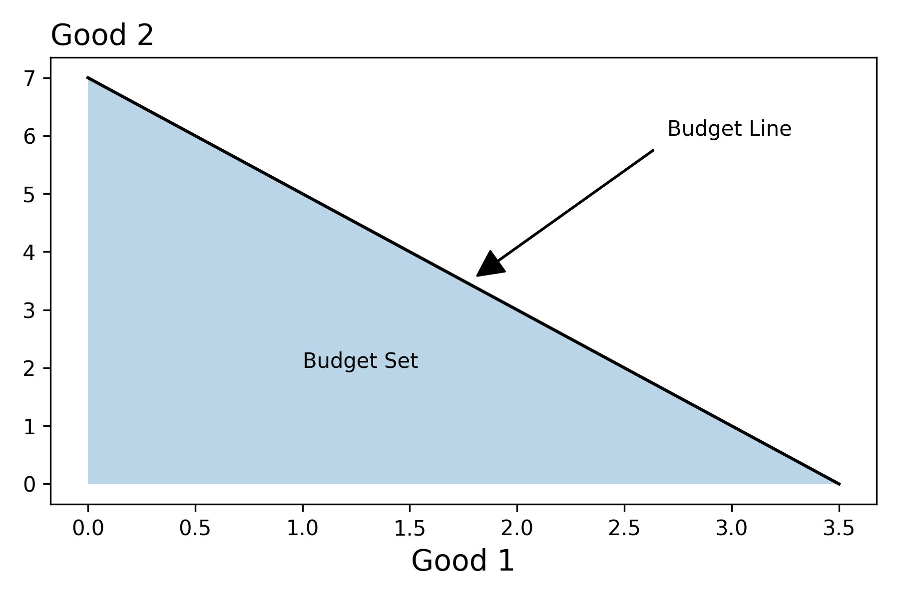

Constraints
Overview
The aim of this chapter is to illustrate how constraints reflect the "true" cost of some activity or some good.
\[B := \{x \in \mathcal{X} | \ F(x) \leq 0\}\]
Consumers
Budget Constraint
To begin, let's consider the situation where a consumer with a certian level of income \(m\) chooses a bundle from among \(n\) goods. Mathematically we represent this situation as follows:
- Choice Variables: Let \(x \in \mathbb{R}^n\) represent a bundle of goods. That is \(x.i\) denotes the amount of the \(i^{th}\) good in the bundle
- ParametersLet \(p \in \mathbb{R}^n\) represent the prices of the \(n\) goods. That is, \(p.i\) corresponds to the price of the \(i^{th}\) good.
Then we can define our budget set as follows:
\[\begin{align*}B := \{x \in \mathcal{X} | \ F_{p,m}(x) \leq 0\} \\\\
\text{where} \quad F_{p,m}(x) = p \cdot x - m \end{align*}\]
It can be helpful to get into the habit of asking, how do "things" change if we tweak the parameters? In this setting, we may be interested in understanding how the budget set changes in response to an increase in income, or to a decrease in the prices. See if you can work through this.
Math on the Computer
import jax
import jax.numpy as jnp
import matplotlib.pyplot as plt
from functools import partial
from typing import NamedTuple
class Params(NamedTuple):
"""Parameters of the budget constraint"""
income: float
price1: float
price2: float
class ChoiceVariables(NamedTuple):
"""Bundle of Goods"""
good1: float
good2: float
def F(params: Params, good1: float):
"""Constraint Function"""
good2 = params.income/params.price2 -good1*(params.price1/params.price2)
return ChoiceVariables(good1, good2)
params = Params(35.0, 10.0, 5.0) # Initialize Parameters for F
good1s = jnp.linspace(0, params.income/params.price1, 100) # Max x1 is m/p1
bundles = jax.vmap(partial(F, params))(good1s) # Partially Evaluate + "Vectorize"
flowchart LR
A(Prices) --> B(Good2);
C(Income) --> B;
D(Good1) --> B;
style A fill:red,stroke:#333,stroke-width:1px
style C fill:red,stroke:#333,stroke-width:1px
style B fill:green,stroke:#333,stroke-width:1px
style D fill:green,stroke:#333,stroke-width:1px
Taxes/ Subsidies
- There is often a difference between the price that suppliers receive, \(p_s\), and the prices that consumers pay, \(p_c\). We can represent this difference via a function that maps \(p_s\) to \(p_c\).
\[\begin{align*} p_s &\longmapsto p_s + \alpha \\
p_s &\longmapsto (1+ \alpha)p_s \end{align*}\]
- We can also generalize the set-up by allowing the the tax/subsidy depend on the amount of the good.
flowchart LR
A(Supplier Prices) --> B(Consumer Prices);
C(Tax) --> B;
D(Good1) -->B;
C --> F(Disposable Income);
B --> H(Good2);
F --> H;
Z(Income) --> F;